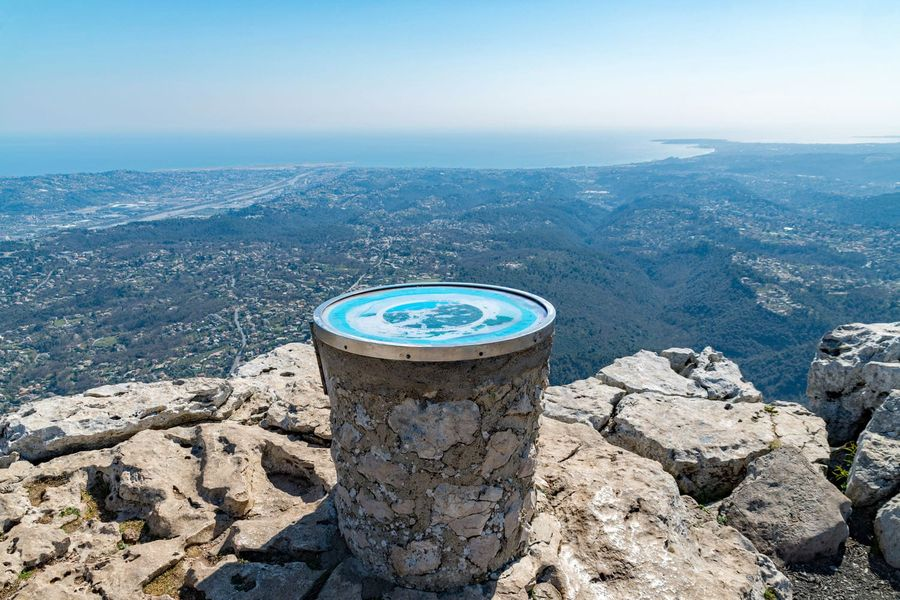

Navette
Comment voulez-vous monter ?
Le bon réflexe
Le week-end, les parkings du village saturent vite. Garez-vous au parking de l'école des Prés (quartier du Peyron), puis montez en navette ou à pied.
🅿️ Parking de l'école des Prés
Recommandé le week-endDépart navetteChemin de la Billoire, quartier du Peyron, en bas de la commune. Village à 20–30 min à pied.
🅿️ Parking René Veyssi
GratuitPlein lors des événements⚡ Borne T2 22 kWChemin de la Tourraque, entrée du village, en face du service Tourisme. Terminus de la navette. Sans disque.
🅿️ Parking Sainte-Barbe
Disque 2 h8h – 18h en semaineLibre le week-endInterdit lors des événementsDe 8h à 18h en semaine : stationnement limité à 2 h avec disque. Week-end : gratuit, sans disque. Stationnement interdit uniquement lors des événements.
🥾 Monter à pied
Du parking des Prés / Peyron jusqu'au village : environ 20 à 30 min de marche.
Le tracé : parking des Prés → village
Plan schématique. Pour le chemin détaillé, utilisez le bouton ci-dessous.

Randonnées depuis le village
Le GR 51 « Balcons de la Côte d'Azur » traverse le village.
Petite boucle n°1 du village
FacilePromenade courte avec vue sur le village et le cap d'Antibes.
Circuit du Baou de la Gaude
MoyenneBoucleDépart parking du village. Pas de point d'eau sur le parcours.
Voir le tracéBaou de Saint-Jeannet, retour par le Castellet
MoyenneBoucleBories, Jas Jauserand & Baou de la Gaude
SoutenueBoucleBories, aire de battage, vieille bergerie, gros chêne du Baou de la Gaude.
Voir le tracéDistances et durées indicatives.
Avant de partir
- 💧 Remplissez votre gourde au village.
- 🐕 Chien tenu en laisse : troupeaux possibles.
- 👟 Bonnes chaussures : sentiers caillouteux.
- ☀️ L'été, partez tôt.
🌿 Mon impact
Combien de CO₂ j'évite en laissant la voiture en bas ?
Estimation : environ 0,2 kg de CO₂ par km pour une voiture thermique moyenne.
⚡ Bornes de recharge
- Parking René Veyssi — 2 chemin de la Tourraque, prise T2 jusqu'à 22 kW
- Le Peyron — 2525 route de Gattières
- Saint-Estève — ZAC de Saint-Estève
Respecter les Baous
- Restez sur les sentiers balisés.
- Rapportez vos déchets.
- Préservez les murets et bories en pierre sèche.
- Pas de feu dans la garrigue.